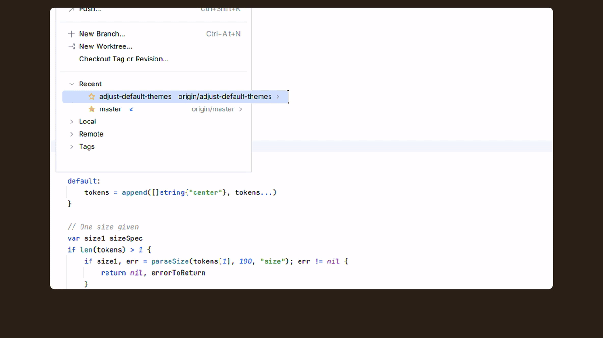
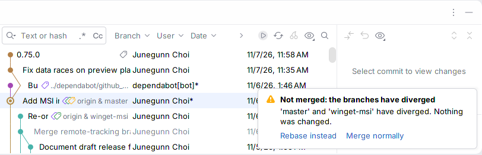
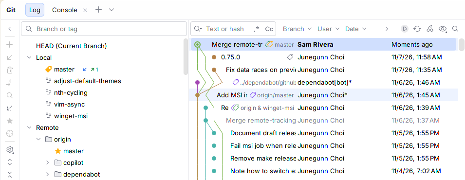

Watch it work

What the IDE already does
The IDE already does part of this, and the listing says so.
Choose --ff-only or --no-ff | Hint before you click | Where | |
|---|---|---|---|
| The IDE's popup merge ("Merge 'x' into 'y'") | No: Git's default or your merge.ff | No | Branches popup and Branches pane, one click |
| The IDE's Git | Merge dialog | Yes, under Modify options | No | Git menu, then a dialog |
| Histsight | Yes: one entry for each | Yes: fast-forward, already up to date or diverged | Branches popup and Branches pane, one click |
Ticking Amend in the Commit tool window already shows the commit being amended; Histsight adds the check against remote branches. Git stops a rebase at each conflict; Histsight tells you beforehand how many times.
In the IDE, for real



Checked against real rebases
On 119 pairs of real topic branches from the Git project's history (14,853 replayed commits), the preview predicted all 752 conflict stops, assuming each conflict keeps the replayed commit's version.
Known limits
- Rebase preview: Git 2.40+; plain rebase only, not
--rebase-merges,--ontoor autosquash; no WSL Git. - No Jujutsu,
--squash, amending or push. - JetBrains IDEs 2025.1+; run in IntelliJ IDEA and PyCharm only; other IDEs and Remote Development untested.
Details
- Free on JetBrains Marketplace once listed; GPL-3.0-or-later, licence text.
- Runs only your local
git; no network calls, no telemetry (privacy).
Screenshots: IntelliJ IDEA 2026.3 on fzf (MIT), demo commits. Git is a trademark of Software Freedom Conservancy, IntelliJ IDEA of JetBrains s.r.o.; Histsight is affiliated with neither.